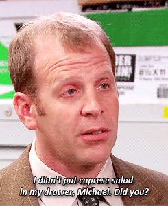

Caprese Salad

Ingredients
- 4 large tomatoes
- 8 ounces (225g) fresh mozzarella cheese
- Fresh basil leaves
- 2 tablespoons extra virgin olive oil
- 2 tablespoons balsamic glaze
- Salt and pepper to taste
Instructions
- Slice the tomatoes and mozzarella cheese into ¼-inch thick slices.
- Arrange the tomato slices on a serving platter, alternating with slices of mozzarella cheese.
- Place a fresh basil leaf on top of each tomato and cheese slice.
- Drizzle the extra virgin olive oil over the salad.
- Drizzle the balsamic glaze over the salad in a zigzag pattern.
- Season with salt and pepper to taste.
- Serve the Caprese salad immediately as an appetizer or as a side dish to your main course.